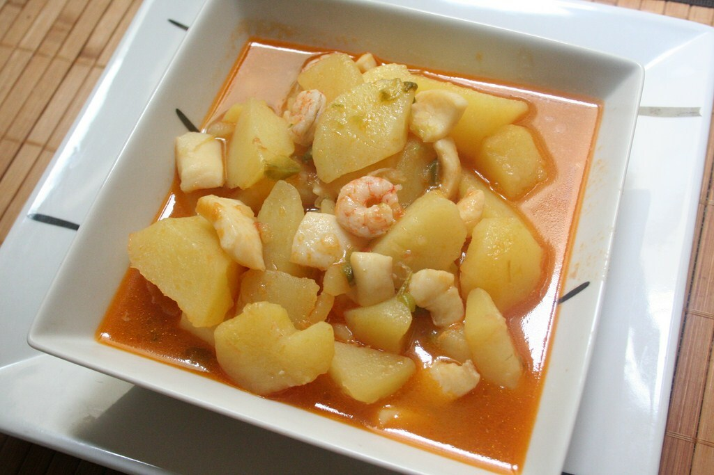

RECETA #1 POLLO BRUNSWICK
INGREDIENTES
- 8 Contramuslos de pollo.
- 2 Cebollas.
- 1 Pimiento rojo.
- 1 Pimiento amarillo.
- 1 Lata pequeña de maiz
- 1 Lata de tomate pelados troceados(o de pelados enteros y tienen que trocearlos pero sin tirar el liquido).
- 1 Un puñado de judias verdes.
- Pimentón.
- Tabasco (Opcional).
- 1 Pastilla de caldo de pollo.
- Un chorrito de vino blanco.
- Aceite, Sal y Pimienta.
RECETA #2 CALDO DE RES
INGREDIENTES
- 1 Kg de Piezas de Carne de Res.
- 250 gr de Apio.
- 250 gr de Calabacita.
- 250 gr de Zanahorias.
- 1 Chile Jalapeño.
- 1 Elote.
- 200 gr de Poro.
- 3 Dientes de Ajo.
- 100 gr de Cilantro.
- 2 Cucharadas de Aceite de Oliva.
- Pimienta Negra al Gusto.
- 1 Cucharada de Sal.
- 1 Papa.
- 1 Cebolla.
RECETA #3 BACALAO AL HORNO
INGREDIENTES
- 450 g De bacalao desalado (o fresco).
- 1 Cebolla.
- 1 Pimiento rojo tipo morrón.
- 4 Dientes de ajo.
- 2 Guindillas de cayena.
- 1 Laurel.
- 450 g De bacalado desalao.
- Aceite de oliva virgen extra.
- Pimienta negra molida.
- Sal y vino blanco (opcional).
MAS RECETAS
Receta De Pate De Gambas Al Ajillo
Receta De Lentejas Con Hinojo Silvestre

Receta De Patatas A La Marinera
